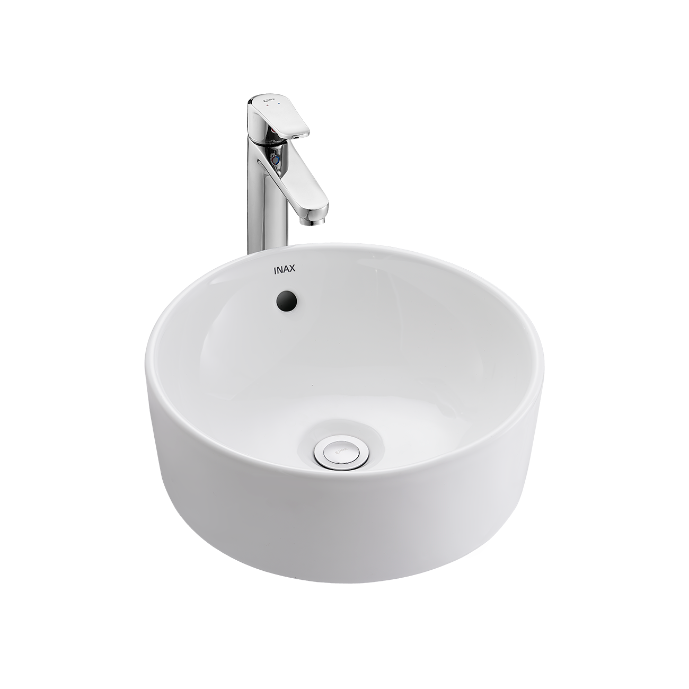
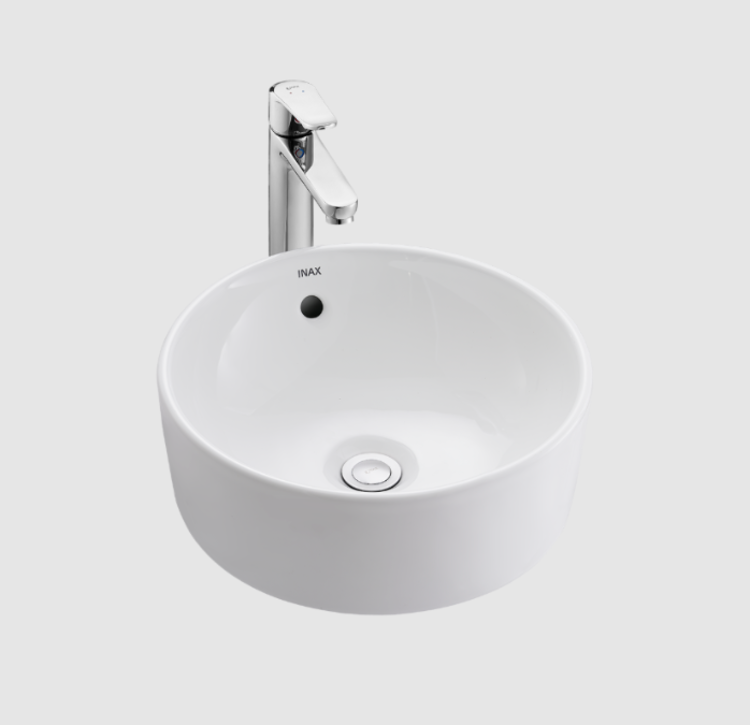
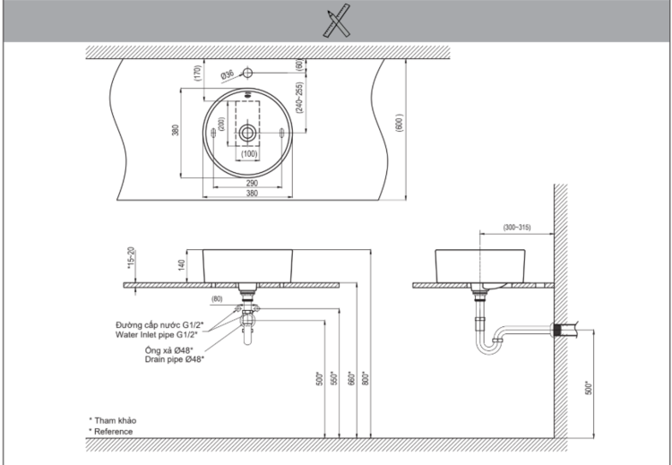

Với thiết kế tinh tế và chất liệu men sứ cao cấp, chậu rửa mặt đặt bàn L-295V không chỉ đáp ứng mọi nhu cầu sử dụng mà còn biến phòng tắm của bạn trở thành một không gian thư giãn sang trọng, đẳng cấp, hiện đại hơn.Đặc điểm nổi bật của chậu rửa đặt bàn L-295VThiết kế đặt nổi sang trọng, hiện đạiChậu rửa mặt đặt bàn L-295V của INAX được thiết kế theo kiểu đặt nổi trên bàn, mang đến vẻ đẹp hiện đại và tinh tế. Dáng chậu hình tròn mềm mại, bo cong nhẹ nhàng, tạo cảm giác thanh lịch và thoải mái. Kích thước chậu nhỏ gọn 380 x 173 x 380 mm (Rộng x Cao x Sâu) giúp bạn dễ dàng lắp đặt, phù hợp với mọi không gian, kể cả những phòng tắm/phòng vệ sinh có diện tích khiêm tốn.Bề mặt chậu rửa mặt L-295V được phủ lớp men sứ cao cấp đạt chuẩn Nhật Bản, mang lại vẻ ngoài sáng bóng cho sản phẩm. Lớp men này không chỉ làm tăng tính thẩm mỹ mà còn giúp bạn vệ sinh dễ dàng. Chỉ với một chiếc khăn mềm, mọi vết bẩn sẽ dễ dàng được lau sạch, giúp chậu luôn mới và sáng bóng như ngày đầu.Độ bền cao, an toàn cho sức khỏeChậu rửa đặt bàn L-295V được sản xuất dựa trên dây chuyền công nghệ hiện đại của INAX - thương hiệu uy tín hàng đầu Nhật Bản trong lĩnh vực thiết bị vệ sinh. Lớp men sứ cao cấp được nung ở nhiệt độ cao, đảm bảo độ cứng chắc, bền bỉ và chống trầy xước hiệu quả. Đặc biệt, lớp men này không chứa chì và các chất độc hại, đảm bảo an toàn tuyệt đối cho sức khỏe người dùng, thân thiện với môi trường.Một điểm nhấn nổi bật khác của chậu rửa đặt bàn L-295V là lỗ xả tràn tiện lợi. Thiết kế này giúp ngăn nước tràn ra sàn nhà khi bạn quên tắt vòi nước, đảm bảo vệ sinh và an toàn cho không gian phòng tắm.Phối hợp hoàn hảo với các phụ kiệnĐể hoàn thiện vẻ đẹp của chậu rửa mặt L-295V, INAX gợi ý kết hợp sản phẩm với các sản phẩm vòi đi kèm như sen vòi đơn LFV-5012SH hoặc vòi chậu rửa mặt nóng lạnh LFV-652SH. Sự kết hợp đồng bộ này không chỉ tạo nên một tổng thể hài hòa, đẳng cấp mà còn tối ưu hóa trải nghiệm sử dụng của bạn.Video giới thiệu chậu rửa INAXHướng dẫn lắp đặt chậu rửa đặt bàn L-295VXem chi tiết cách lắp đặt tại đâyHướng dẫn sử dụng chậu rửa đặt bàn L-295VSử dụng chất tẩy rửa trung tính (pH=5.5~7) (xà phòng, nước rửa tay, nước rửa bát...) hoặc chất tẩy rửa có tính axit hoặc kiềm để làm sạch và bảo dưỡng sản phẩm này. Tuy nhiên, để phát huy được hiệu quả lâu dài của AQUA CERAMIC, vui lòng KHÔNG sử dụng các chất tẩy rửa sau đây cho sản phẩm sứ vì nó sẽ làm xước bề mặt, làm hư hại bề mặt men.Chất tẩy rửa có tính kiềm mạnh với pH≥11.Chất tẩy rửa có bột mài.Chổi cọ rửa có gắn vật liệu có tính mài mòn.Lưu ý:Không sử dụng chất tẩy rửa có tính axit mạnh vì có thể làm hỏng các phụ kiện đi kèm.Không để chất tẩy rửa bắn lên các khu vực, đặc biệt là các bộ phận kim loại như bộ cố định nắp bàn cầu, nút nhấn, tay gạt, van khóa nước, dây cấp nước,... vì có thể gây rỉ hoặc hư hỏng.Thông số kỹ thuậtChất liệuMen sứ cao cấp chuẩn Nhật, sáng bóng, dễ vệ sinhLoạiĐặt bànKích thước380 x 173 x 380 (mm) (Rộng x Cao x Sâu)Thương hiệuINAXThiết kế- Kiểu dáng: dạng đặt nổi trên bàn sang trọng - Thiết kế hiện đại, tinh tế - Lỗ xả tràn tiện lợiMàu sắcTrắngKhác- Gợi ý sản phẩm đi kèm: sen vòi đơn LFV-5012SH, vòi chậu rửa mặt nóng lạnh LFV-652SH - Hotline tư vấn: 18006633Video về lịch sử INAX - thương hiệu đến từ Nhật Bản
Chậu rửa đặt bàn L-295V
Chậu rửa thương hiệu INAX.
Đã cập nhật danh sách yêu thích.
DANH MỤC: Chậu rửa
MÃ SẢN PHẨM: L-295V
DEPTH: mm
HEIGHT: mm
WIDTH: mm
Với thiết kế tinh tế và chất liệu men sứ cao cấp, chậu rửa mặt đặt bàn L-295V không chỉ đáp ứng mọi nhu cầu sử dụng mà còn biến phòng tắm của bạn trở thành một không gian thư giãn sang trọng, đẳng cấp, hiện đại hơn.Đặc điểm nổi bật của chậu rửa đặt bàn L-295VThiết kế đặt nổi sang trọng, hiện đạiChậu rửa mặt đặt bàn L-295V của INAX được thiết kế theo kiểu đặt nổi trên bàn, mang đến vẻ đẹp hiện đại và tinh tế. Dáng chậu hình tròn mềm mại, bo cong nhẹ nhàng, tạo cảm giác thanh lịch và thoải mái. Kích thước chậu nhỏ gọn 380 x 173 x 380 mm (Rộng x Cao x Sâu) giúp bạn dễ dàng lắp đặt, phù hợp với mọi không gian, kể cả những phòng tắm/phòng vệ sinh có diện tích khiêm tốn.Bề mặt chậu rửa mặt L-295V được phủ lớp men sứ cao cấp đạt chuẩn Nhật Bản, mang lại vẻ ngoài sáng bóng cho sản phẩm. Lớp men này không chỉ làm tăng tính thẩm mỹ mà còn giúp bạn vệ sinh dễ dàng. Chỉ với một chiếc khăn mềm, mọi vết bẩn sẽ dễ dàng được lau sạch, giúp chậu luôn mới và sáng bóng như ngày đầu.Độ bền cao, an toàn cho sức khỏeChậu rửa đặt bàn L-295V được sản xuất dựa trên dây chuyền công nghệ hiện đại của INAX - thương hiệu uy tín hàng đầu Nhật Bản trong lĩnh vực thiết bị vệ sinh. Lớp men sứ cao cấp được nung ở nhiệt độ cao, đảm bảo độ cứng chắc, bền bỉ và chống trầy xước hiệu quả. Đặc biệt, lớp men này không chứa chì và các chất độc hại, đảm bảo an toàn tuyệt đối cho sức khỏe người dùng, thân thiện với môi trường.Một điểm nhấn nổi bật khác của chậu rửa đặt bàn L-295V là lỗ xả tràn tiện lợi. Thiết kế này giúp ngăn nước tràn ra sàn nhà khi bạn quên tắt vòi nước, đảm bảo vệ sinh và an toàn cho không gian phòng tắm.Phối hợp hoàn hảo với các phụ kiệnĐể hoàn thiện vẻ đẹp của chậu rửa mặt L-295V, INAX gợi ý kết hợp sản phẩm với các sản phẩm vòi đi kèm như sen vòi đơn LFV-5012SH hoặc vòi chậu rửa mặt nóng lạnh LFV-652SH. Sự kết hợp đồng bộ này không chỉ tạo nên một tổng thể hài hòa, đẳng cấp mà còn tối ưu hóa trải nghiệm sử dụng của bạn.Video giới thiệu chậu rửa INAXHướng dẫn lắp đặt chậu rửa đặt bàn L-295VXem chi tiết cách lắp đặt tại đâyHướng dẫn sử dụng chậu rửa đặt bàn L-295VSử dụng chất tẩy rửa trung tính (pH=5.5~7) (xà phòng, nước rửa tay, nước rửa bát...) hoặc chất tẩy rửa có tính axit hoặc kiềm để làm sạch và bảo dưỡng sản phẩm này. Tuy nhiên, để phát huy được hiệu quả lâu dài của AQUA CERAMIC, vui lòng KHÔNG sử dụng các chất tẩy rửa sau đây cho sản phẩm sứ vì nó sẽ làm xước bề mặt, làm hư hại bề mặt men.Chất tẩy rửa có tính kiềm mạnh với pH≥11.Chất tẩy rửa có bột mài.Chổi cọ rửa có gắn vật liệu có tính mài mòn.Lưu ý:Không sử dụng chất tẩy rửa có tính axit mạnh vì có thể làm hỏng các phụ kiện đi kèm.Không để chất tẩy rửa bắn lên các khu vực, đặc biệt là các bộ phận kim loại như bộ cố định nắp bàn cầu, nút nhấn, tay gạt, van khóa nước, dây cấp nước,... vì có thể gây rỉ hoặc hư hỏng.Thông số kỹ thuậtChất liệuMen sứ cao cấp chuẩn Nhật, sáng bóng, dễ vệ sinhLoạiĐặt bànKích thước380 x 173 x 380 (mm) (Rộng x Cao x Sâu)Thương hiệuINAXThiết kế- Kiểu dáng: dạng đặt nổi trên bàn sang trọng - Thiết kế hiện đại, tinh tế - Lỗ xả tràn tiện lợiMàu sắcTrắngKhác- Gợi ý sản phẩm đi kèm: sen vòi đơn LFV-5012SH, vòi chậu rửa mặt nóng lạnh LFV-652SH - Hotline tư vấn: 18006633Video về lịch sử INAX - thương hiệu đến từ Nhật Bản
DANH MỤC: Chậu rửa
MÃ SẢN PHẨM: L-295V
DEPTH: mm
HEIGHT: mm
WIDTH: mm